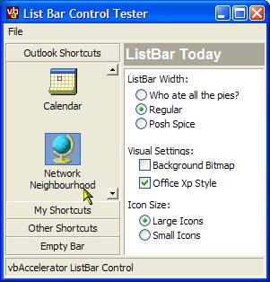
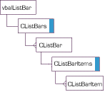
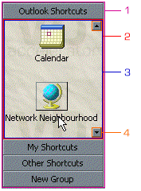

VB5 List Bar Control Binary (44K)
VB5 List Bar Control Binary (44K)
 VB5 List Bar Demonstration (39K)
VB5 List Bar Demonstration (39K)
 VB5 List Bar Full Source (136K)
VB5 List Bar Full Source (136K)
 VB6 List Bar Control Binary (45K)
VB6 List Bar Control Binary (45K)
 VB6 List Bar Demonstration (35K)
VB6 List Bar Demonstration (35K)
 VB6 List Bar Full Source (132K)
VB6 List Bar Full Source (132K)
 Bugs: 4 / 7
Bugs: 4 / 7
 Issues: 6 / 7
Issues: 6 / 7
 Questions: 0 / 0
Questions: 0 / 0
 17 Feb 2003
17 Feb 2003
Added Office XP highlighting style.
Fixed two bugs in the cListBar class: ForeColor and HelpText properties did not work correctly - thanks to Simon Horton.
Added a method to the cListBarItems class to remove all items from a bar, and fixed an intermittent problem with removing the last item from a bar (item still showed and caused a crash if you clicked on it - thanks to Daniel). this.
Prevented BarClick events from firing when the ListBar was resized - thanks to Billy Propes.
 Ole Guid and interface definitions (OleGuids.Tlb)
Ole Guid and interface definitions (OleGuids.Tlb)
 vbAccelerator Visual Studio Style ToolBox ListBar
vbAccelerator Visual Studio Style ToolBox ListBar
 Subclassing Without The Crashes
Subclassing Without The Crashes
 vbAccelerator ImageList Control and Class v2.0
vbAccelerator ImageList Control and Class v2.0

vbAccelerator ListBar Control
An accurate reproduction of the Microsoft Outlook Bar, incorporating a solid ComCtl32.DLL ListView implementation in VB for you to play with!
The vbAccelerator ListBar control is an all-VB control which emulates the Outlook sidebar as accurately as possible. I was inspired to write it when I started playing with Microsoft's Spy++ utility and pointed it at Outlook's list bar (or "ShortcutBar" as it publicises itself to the world) and noticed that the main component of the ListBar was actually a standard COMCTL32.DLL ListView.
Flies
So, having seen how the MS version worked, I figured there would be no problem implementing a ListView like this and next thing there would be a super accurate Outlook Bar just ready for playing with. Not to mention I could provide you with in-place editing without writing any code, and provide Background Bitmap support so easily! How hard could it be?
Well, one day I will finally stop saying "How hard can it be?" and may even stop having to compile my code at 4:30am and dragging in to work the next day with flies buzzing around my head. One day.
In the meantime, here are the results! Go download the S-Grid Control and you will have a serious pair of complementary tools for building real world UI solutions. Combine everything with the ultimate in Windows style using the CoolMenu/ToolBar/Rebar control and you're well on your way to having a killer business app!
Objective Gratification
One of the differences between this control and many of the previous controls at vbAccelerator is that it h as a fully-fledged object model - bars are programmed using the cListBar object which is collected in the CListBars collection, and within a bar items are modified using a cListBarItem object which is collected in the cListBarItems collection.
The collection is shown in the object model:
vbAccelerator ListBar Object Model
One of the issues with programming an object model like this is it is easy to get into problems with circular references; where objects are referred to by an external consumer of the control and by the control itself, which is also referred to by the consumer. Such problems can prevent the _Terminate event of objects ever firing. This situation is normally undesirable (causing memory leaks) but when you have subclassing and Win32 API controls it becomes uncontrollable, leading to UAE/GPFs whenever a form containing the control is closed.
The object model coded in this control demonstrates one technique you can use to completely guarantee no possibility of a circular reference. The downside to the technique is that it requires more code to be run before an object is provided to the user. That isn't a problem in a control which is managing only a small number of objects, such as the Outlook bar (i.e. less than 1,000). But it would be unsuitable for use in a control like the vbAccelerator S-Grid control, which is currently capable of adding and displaying tens of thousands of objects at a reasonable speed.
The Struture of the ListBar/Outlook Bar
ListBar Structure
The ListBar consists of 4 window parts:
- The Main Container
This window is responsible for the border around the control and drawing the bar selection buttons. The border is either turned off or implemented using the extended window styles WS_EX_STATICEDGE for a thin 3D border or the WS_EX_CLIENTEDGE style for a standard 3D border. By using extended window styles to draw the control border, the internal dimensions of the control (.ScaleWidth and .ScaleHeight) are automatically adjusted to take account of the border and windows draws the border for you.
In the Microsoft Outlook implementation, this window has a caption of "ShortcutBar" and a class name of "rctrl_renwnd32" - this class is used as a general container in Outlook.
- The Scroll ViewPort
This window is responsible for clipping the areas of the ListBar which can't be seen as the ListBar is scrolled up and down. When the container resizes this window, it instructs it to detect whether the ListBar is bigger than its client area, so it can then determine whether to display the up and down buttons.
In the Microsoft Outlook implementation, this window has the same class name as the main window and a caption of "FIScrollWnd".
- The ListBar
This is the list of icons. In both the Microsoft and my implementation this is implemented using an API created ImageList control with the LVS_NOSCROLL style turned on. The same window is reused for each ListBar: when the bar selection button is clicked, a snapshot of the ListView display is taken and displayed, the ListView is then made invisible and filled with the new items and finally the container animates the ListView window in steps.
Controlling the position of the icons in the ListView is performed by sending LVM_SETITEMPOSITION32 messages whenever the ListBar is resized.
To implement the hot, mouse-over highlighting of buttons, the ListView Custom Draw services are used. Firstly, the ListView has the LVS_EX_ONECLICKACTIVATE extended style set, which causes the control to start highlighting hot items. The default highlighting scheme is to underline the text and colour it in the selected text colour, however when using the Custom Draw services you can override the colours and to some extent the graphics being drawn.
- The ScrollButtons
This is the only area in which the vbAccelerator control diverges from the Outlook implementation. In Outlook, this control appears to be drawn directly onto the ListView, however the vbAccelerator control uses two standard VB CommandButton controls with the Style property set to Graphical. The face of the control is then drawn by overriding the WM_DRAWITEM message sent by the control.
Important Note About VB6 ImageLists
Please note that VB6 ImageList (from MSCOMCTL.OCX) doesn't work with this control under Windows 2000/XP. This is because the ImageList handle returned by the control isn't compatible with ComCtl32.DLL on those systems. Microsoft may have some sort of fix for this (see KB article KB811415) but currently the fix is only available by contacting Microsoft support directly and isn't redistributable. If you have a copy of this (MSCOMCTL.OCX version 6.0.97.1) to try it out then please let me know!.